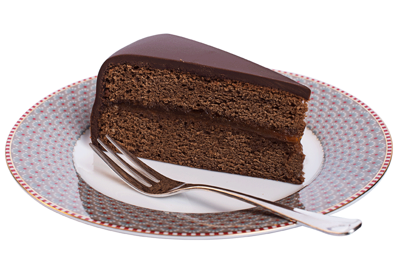

Die 150 g Schokolade im Wasserbad schmelzen und leicht abkühlen lassen. Die flüssige Schokolade mit der Butter schaumig rühren. Puderzucker und Eigelb dazugeben, dabei weiterrühren. Das Mehl mit dem Backpulver mischen und unter die Masse rühren. Das Eiweiß zu festem Schnee schlagen dabei die 30 g Zucker einrieseln lassen. Den Eischnee vorsichtig unter den Teig heben. Den Teig in eine gefettete Springform geben.
Im vorgeheizten Backofen bei 180°C ca. 50-55 Minuten backen.
Nach dem Auskühlen den Kuchen einmal durchschneiden (sollte er sehr hoch geworden sein, kann man ihn auch zweimal teilen) und den unteren Boden mit Aprikosenmarmelade bestreichen. Den Deckel auflegen. Die gesamte Sachertorte zum Abschluss mit geschmolzener Kuvertüre überziehen.
Tipp: Hält sich ewig, wenn man den Kuchen fest in Alufolie wickelt. Je länger die Marmelade in den Teig zieht, desto saftiger wird er.
